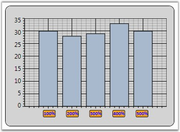

ChartAxis Labels can be customized by using the below given properties.
Table 142: ChartAxis Property
|
ChartAxis Property |
Description |
|
LabelBackground |
gets or sets the Background of the ChartAxis Label |
|
LabelForeground |
gets or sets the Foreground of the ChartAxis Label |
|
LabelBorderBrush |
gets or sets the Border brush of the ChartAxis Label |
|
LabelBorderThickness |
gets or sets the Border thickness of the ChartAxis Label |
|
LabelCornerRadius |
gets or sets the Corner Radius of the ChartAxis Label |
|
LabelFontFamily |
gets or sets the FontFamily of the ChartAxis Label |
|
LabelFontSize |
gets or sets the FontSize of the ChartAxis Label |
|
LabelFontWeight |
gets or sets the FontWeight of the ChartAxis Label |
|
LabelFormat |
gets or sets the Format of the ChartAxis Label such as 0.00 or 0 precent |
|
LabelDateTimeFormat |
gets or sets the DateTime Format of the ChartAxis Label Applicable when Axis.ValueType is DateTime |
The below given code snippet could be used to customize the Chart Axis Labels.
|
[XAML]
<sfchart:ChartArea.PrimaryAxis> <sfchart:ChartAxis LabelForeground="Blue" LabelBackground="Orange" LabelBorderBrush="Black" LabelBorderThickness="1" LabelCornerRadius="2" LabelFontFamily="Calibri" LabelFontSize="10" LabelFontWeight="Bold" LabelFormat="0%"/> </sfchart:ChartArea.PrimaryAxis> |
|
[C#]
//Sets the Label settings of PrimaryAxis Area.PrimaryAxis.LabelForeground = Brushes.Blue; Area.PrimaryAxis.LabelBackground = Brushes.Orange; Area.PrimaryAxis.LabelBorderBrush = Brushes.Black; Area.PrimaryAxis.LabelBorderThickness = new Thickness(1); Area.PrimaryAxis.LabelCornerRadius = new CornerRadius(2); Area.PrimaryAxis.LabelFontFamily = new FontFamily("Calibri"); Area.PrimaryAxis.LabelFontSize = 10; Area.PrimaryAxis.LabelFontWeight = FontWeights.Bold; Area.PrimaryAxis.LabelFormat = "0%"; |
Below given figure illustrates Chart with customized Primary Axis labels.

Figure 208: Chart with customized PrimaryAxis Labels
See Also
Chart Font Settings, Axis Label Rotate, Intersecting Labels